Play: mean 1.82, changed 1.54%
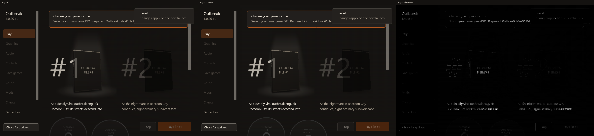
Graphics: mean 1.14, changed 1.36%
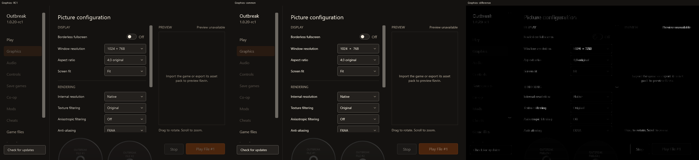
Audio: mean 2.43, changed 2.66%
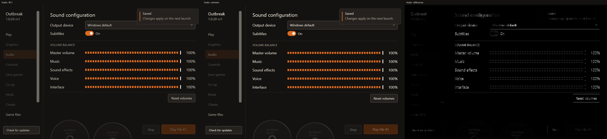
Controller: mean 3.75, changed 4.07%
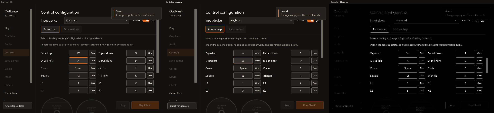
Saves: mean 1.06, changed 1.29%
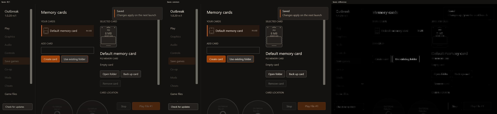
Coop: mean 0.84, changed 1.02%
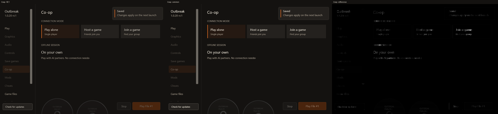
Mods: mean 0.78, changed 0.96%
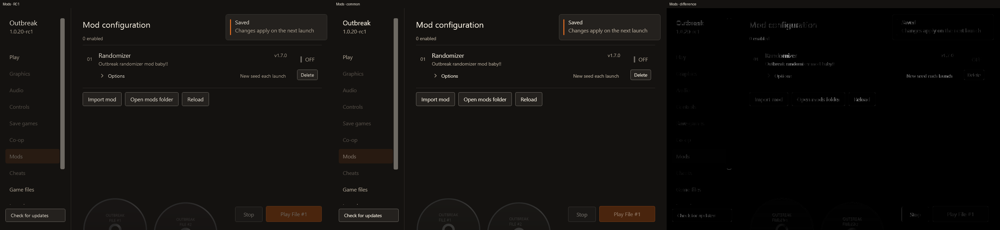
Cheats: mean 1.9, changed 2.32%
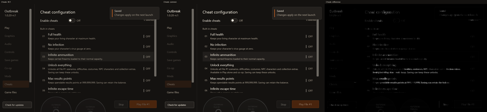
Setup: mean 2.23, changed 2.57%
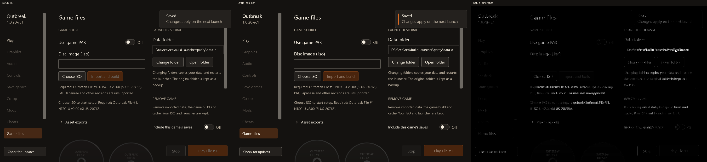
Launcher: mean 0.72, changed 0.98%
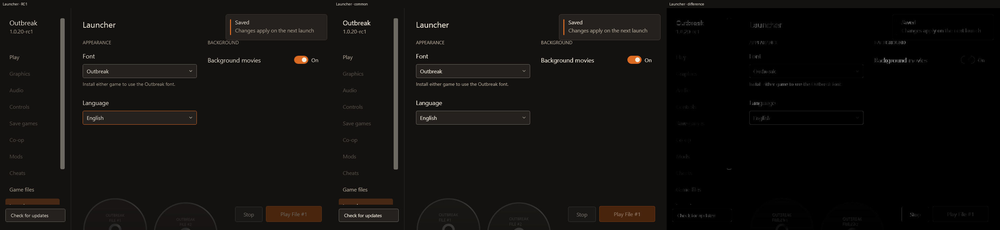
Logs: mean 1.68, changed 1.6%
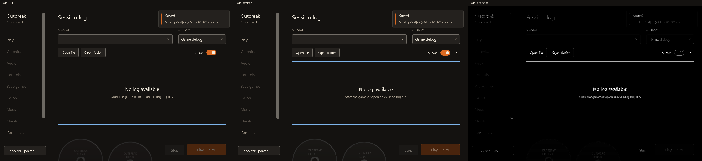
Developer: mean 1.49, changed 1.44%
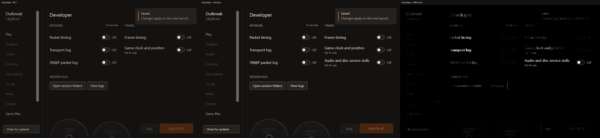